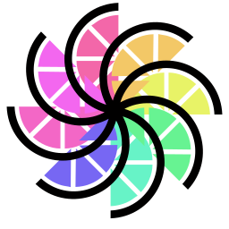

Download
Everything you need to play online with your Nextendo account. Versions below are read live from GitHub.
Ryujinx Nextendo …
The emulator build set up for the network. Sign in from Actions, then Nextendo Network sign-in.

Citron Nextendo …
Another emulator, the same account. Nightly builds.
The companion app
Friends, activity, cloud saves and QR sign-in, on your phone.
On a real Switch (CFW)
Nextendo also works on a Switch running custom firmware. Everything is reversible.
- Install the Nextendo profileIt redirects the console's online services to Nextendo.
- Link your accountSign in from the console with your Nextendo e-mail and password.
- Play onlineOpen any supported game's online mode.